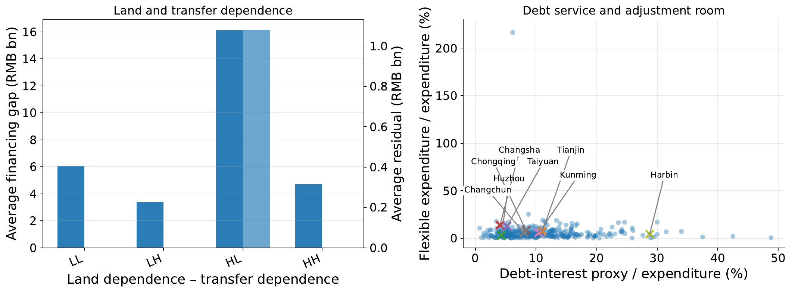
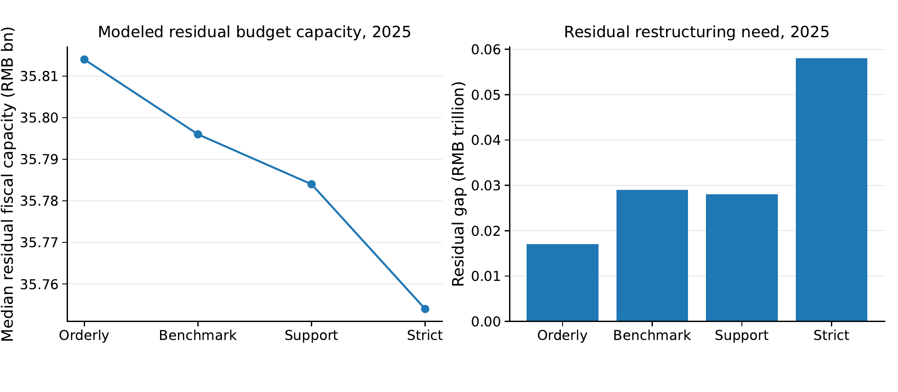

01
The near-term maturity wall is large.
Public LGFV bond maturities total RMB 3.71 trillion in 2025. Under the modeled scenarios, the corresponding financing gap ranges from RMB 1.04 trillion to RMB 2.51 trillion.
Research webpage · China local public finance
Sungkyunkwan University, Republic of Korea
Corresponding author: sls530@skku.edu
ORCID: 0000-0003-4155-2410
This webpage summarizes a scenario-based fiscal stress test. Its results are not estimates of realized policy effects, statutory default, or audited local budgets.
Research question
China’s transition away from implicit LGFV guarantees is not only a debt-management issue. It reallocates pressure across market refinancing, fiscal buffers, transfer resources, land-related revenues, project expenditure, and possible restructuring. This paper develops a transparent, city-level stress test to make that fiscal arithmetic visible.
Transparent stress-test design
The design is deliberately comparative rather than causal: it asks how the burden changes as market refinancing becomes less available.
Merge a 2015–2023 panel of fiscal accounts, debt, macroeconomic, real-estate, and financial variables for 337 cities with public LGFV bond maturities for 2025–2028.
Compare orderly, benchmark, strict, and support-calibrated full-exit scenarios with progressively lower market refinancing availability.
Translate rollover shortfalls into revenue-side shocks, fiscal buffers, protected expenditure floors, and a residual restructuring need.
Separate large nominal maturity walls from fragile configurations, especially high land dependence combined with weak transfer buffers.
Main findings
Results are presented as scenario-dependent stress-test outputs, not as forecasts of a uniform regional collapse.
01
Public LGFV bond maturities total RMB 3.71 trillion in 2025. Under the modeled scenarios, the corresponding financing gap ranges from RMB 1.04 trillion to RMB 2.51 trillion.
02
Relative to orderly exit, the strict scenario lowers simulated tax revenue by 3.0%, government-fund revenue by 11.5%, and land-transfer revenue by 17.0%.
03
The most exposed configuration combines high land dependence with weak transfer buffers. Large cities can have sizeable maturity walls yet still retain modeled absorption capacity.
04
The capacity measure is a narrow residual-budget proxy after selected protected obligations. It does not identify salaries, bonuses, benefits, cash balances, or legal payment capacity.
Selected visual evidence
Click any figure for the high-resolution PDF used in the manuscript.

City-average financing gaps and residual gaps by land and transfer dependence, together with a descriptive cross-section of debt service and flexible expenditure shares.

The residual capacity proxy follows the protected expenditure floor; it should not be interpreted as a measure of actual personnel compensation or liquidity.
Citation
Replace the author, year, affiliation, repository link, and final publication details once the manuscript is public and bibliographic information is finalized.
@misc{song2026lgfvexit,
title = {From Implicit Guarantees to Fiscal Reallocation: A City-Level Stress Test of Full LGFV Exit in China},
author = {Song, Zichen},
year = {2026},
note = {Working paper}
}